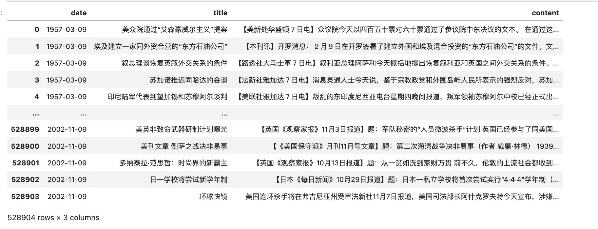
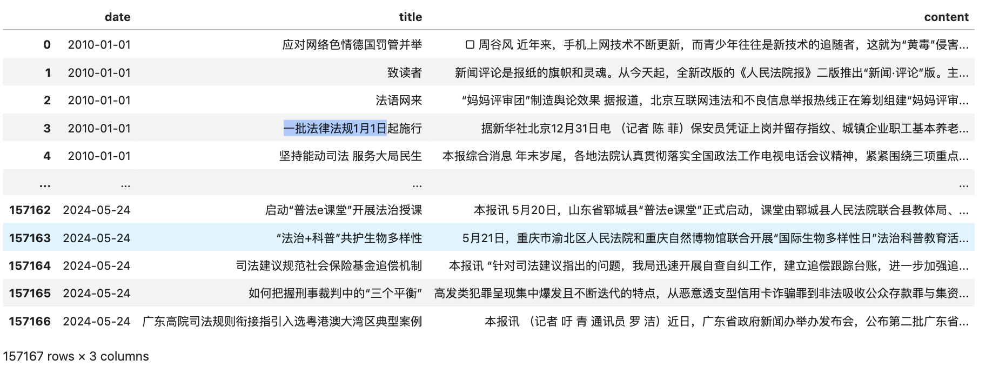
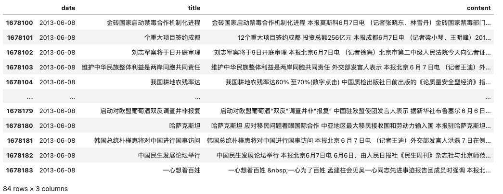
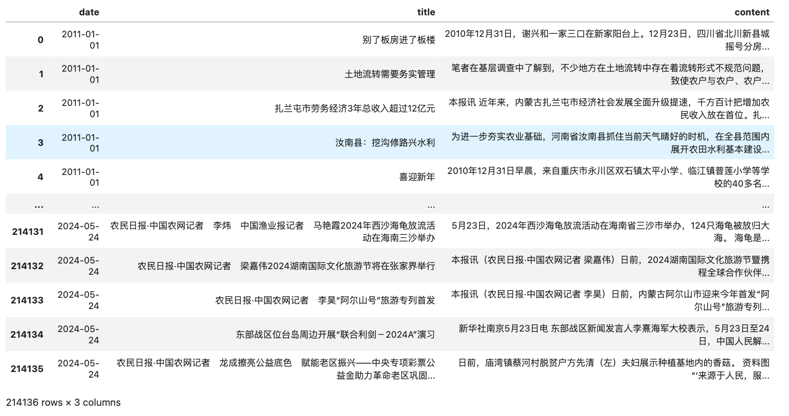
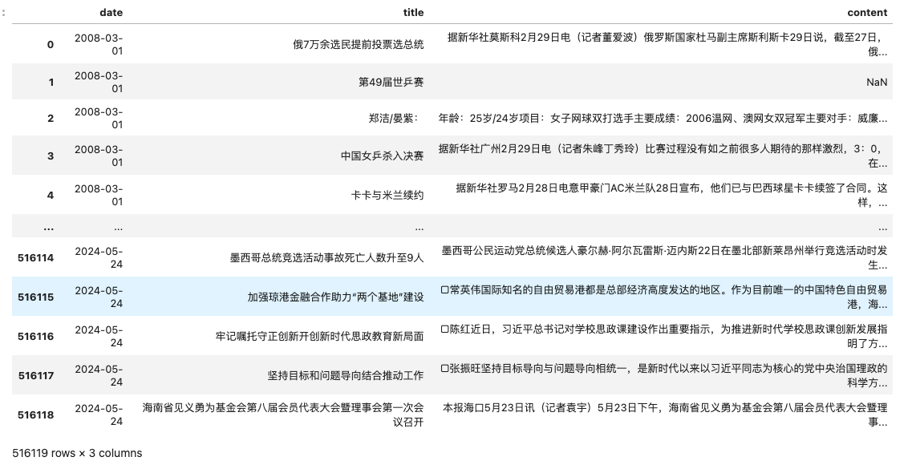

购买数据
- 单买无优惠
- 整体打包购买， 原价 5050 元，现特价 3000 元。
- 支持开票，需要的请加微信372335839，备注【姓名-学校-专业-news】
数据是虚拟产品，一经售出，不再退还！
一、数据用途
新闻报刊类数据集 可提取丰富的指标，包括但不限于 **经济政策不确定性指数 **、环境政策不确定性、 媒体关注度指数、文本相似度、情感分析。此外， 可训练词向量，开发新的概念词典。数据带时间， 参照前面指标， 依主体、日期、指标进行计算， 可构造面板数据，构建新的指标指数。因此在经济学、管理学、新闻传播学、公共管理、社会学等领域均有较高的研究价值。
相关参考文献
[1]洪永淼,刘俸奇,薛涧坡.政府与市场心理因素的经济影响及其测度[J].管理世界,2023,39(03):30-51.
[2]刘景江,郑畅然,洪永淼.机器学习如何赋能管理学研究？——国内外前沿综述和未来展望[J].管理世界,2023,39(09):191-216.
[3]张一帆,林建浩,樊嘉诚.新闻文本大数据与消费增速实时预测——基于叙事经济学的视角[J].金融研究,2023,(05):152-169.
[4]Huang, Yun, and Paul Luk. "Measuring economic policy uncertainty in China." China Economic Review 59 (2020): 101367
[5]欧阳资生,陈世丽,杨希特,刘凤根,周学伟.经济政策不确定性、网络舆情与金融机构系统性风险[J].管理科学学报,2023,26(04):62-86.
[6]逯东,宋昕倍.媒体报道、上市公司年报可读性与融资约束[J].管理科学学报,2021,24(12):45-61.
[7]彭涛,黄福广,孙凌霞.经济政策不确定性与风险承担:基于风险投资的证据[J].管理科学学报,2021,24(03):98-114.
[8]庞锐.采纳与内化：多重制度压力如何影响河长制创新扩散——基于省级政府的定向配对事件史分析[J].公共管理学报,2023,20(02):25-37+165-166.
二、「新闻报刊数据集」概况
本数据集，媒体源超60+家，
-
33家国级，如 人民日报、光明日报、经济日报、人民政协报、中国青年报等
-
23个省级，如河北日报、天津日报、海南日报等
-
4个市级， 如宁波日报、青岛日报等
文件格式为压缩文件csv.gz(双击可解压为csv)， 数据集总体积 50+G。
2.1 国级
| 编号 | 媒体 | 起止日期 | 记录数 | 参考价格 |
|---|---|---|---|---|
| N100 | 新闻联播 | 2016-02-04 ~ 2024-05-24 | 44623 | 50元 |
| N101 | 参考消息 | 1957-03-09 ~ 2002-12-31 | 528545 | 500元 |
| N102 | 新华日报 | 2021-12-01 ~ 2024-05-24 | 72515 | 50元 |
| N103 | 人民日报 | 1946-05-15 ~ 2024-05-24 | 2025280 | 2000元 |
| N104 | 光明日报 | 1985-01-01 ~ 2024-05-24 | 861458 | 200元 |
| N105 | 人民法院报 | 2010-01-01 ~ 2024-05-24 | 157167 | 100元 |
| N106 | 人民政协报 | 2008-01-02 ~ 2024-05-24 | 346525 | 100元 |
| N107 | 中国消费者报 | 2010-01-01 ~ 2024-05-24 | 106170 | 200元 |
| N108 | 中国妇女报 | 2021-01-20 ~ 2024-05-24 | 29202 | 50元 |
| N109 | 工人日报 | 2014-01-01 ~ 2024-05-24 | 191691 | 100元 |
| N110 | 农民日报 | 2011-01-01 ~ 2024-05-24 | 214136 | 100元 |
| N111 | 检察日报 | 2022-01-01 ~ 2024-05-24 | 34825 | 50元 |
| N112 | 法制日报 | 2021-01-01 ~ 2024-05-24 | 59586 | 50元 |
| N113 | 解放军报 | 2018-01-01 ~ 2024-05-24 | 112484 | 100元 |
| N114 | 中国气象报 | 1989-01-16 ~ 2024-05-24 | 228910 | 100元 |
| N115 | 中国国防报 | 2018-01-02 ~ 2024-05-24 | 29942 | 50元 |
| N116 | 中国城市报 | 2021-01-04 ~ 2024-05-20 | 7197 | 50元 |
| N117 | 中国能源报 | 2019-01-07 ~ 2024-05-20 | 19306 | 50元 |
| N118 | 中国电影报 | 2019-05-29 ~ 2024-05-22 | 12288 | 50元 |
| N119 | 中国政府采购报 | 2017-11-17 ~ 2024-05-24 | 22721 | 50元 |
| N120 | 中国财经报 | 2017-11-11 ~ 2024-05-23 | 48131 | 50元 |
| N121 | 中国经济导报 | 2012-09-01 ~ 2024-05-23 | 49405 | 50元 |
| N122 | 中国基金报 | 2014-03-03 ~ 2024-05-20 | 5671 | 50元 |
| N123 | 经济参考报 | 2015-01-05 ~ 2024-05-24 | 90847 | 100元 |
| N124 | 每日经济新闻 | 2018-02-01 ~ 2024-05-24 | 43070 | 50元 |
| N125 | 经济日报 | 2008-01-27 ~ 2024-05-24 | 427386 | 200元 |
| N126 | 中国贸易报 | 2011-01-25 ~ 2024-05-23 | 73992 | 100元 |
| N127 | 中国工商报 | 2016-01-05 ~ 2024-05-24 | 70673 | 100元 |
| N128 | 中国工业报 | 2012-02-23 ~ 2024-05-24 | 90987 | 100元 |
| N129 | 中国企业报 | 2011-04-01 ~ 2024-05-21 | 48290 | 100元 |
| N131 | 中国教育报 | 2021-01-01 ~ 2024-05-24 | 22383 | 50元 |
| N132 | 中国青年报 | 2005-01-01 ~ 2024-05-24 | 327806 | 200元 |
| … | … | … | … |
2.2 省级
| 编号 | 媒体 | 起止日期 | 所含字段 | 记录数 | 价格 |
|---|---|---|---|---|---|
| N201 | 北京日报 | 2021-01-01 ~ 2024-05-24 | 73810 | 50元 | |
| N202 | 天津日报 | 2022-09-01 ~ 2024-05-24 | 41775 | 50元 | |
| N203 | 重庆日报 | 2022-01-01 ~ 2024-05-24 | 37255 | 50元 | |
| N204 | 山西日报 | 2022-08-01 ~ 2024-05-24 | 35662 | 50元 | |
| N205 | 河北日报 | 2018-01-02 ~ 2024-05-23 | 141332 | 50元 | |
| N206 | 陕西日报 | 2022-01-01 ~ 2024-05-24 | 42831 | 50元 | |
| N207 | 四川日报 | 2022-01-01 ~ 2024-05-24 | 30568 | 50元 | |
| N208 | 浙江日报 | 2006-01-01 ~ 2024-05-24 | 444705 | 100元 | |
| N209 | 福建日报 | 2023-04-01 ~ 2024-05-24 | 21331 | 50元 | |
| N210 | 黑龙江日报 | 2020-12-06 ~ 2024-05-24 | 44274 | 50元 | |
| N211 | 广西日报 | 2020-01-01 ~ 2024-05-24 | 170532 | 50元 | |
| N212 | 云南日报 | 2021-05-15 ~ 2024-05-24 | 59092 | 50元 | |
| N213 | 新疆日报 | 2018-01-01 ~ 2024-05-24 | 88757 | 50元 | |
| N214 | 内蒙古日报 | 2017-01-01 ~ 2024-05-24 | 105112 | 50元 | |
| N215 | 青海日报 | 2022-01-01 ~ 2024-05-24 | 37609 | 50元 | |
| N216 | 辽宁日报 | 2019-01-01 ~ 2024-05-24 | 103454 | 50元 | |
| N217 | 吉林日报 | 2022-01-01 ~ 2024-05-24 | 28373 | 50元 | |
| N218 | 湖北日报 | 2023-01-01 ~ 2024-05-24 | 26338 | 50元 | |
| N219 | 海南日报 | 2008-03-01 ~ 2024-05-24 | 516119 | 100元 | |
| N220 | 贵州日报 | 2022-01-01 ~ 2024-05-24 | 64168 | 50元 | |
| N221 | 江西新闻 | 2018-09-01 ~ 2024-05-24 | 122594 | 50元 | |
| N222 | 宁夏日报 | 2022-02-01 ~ 2024-05-24 | 36418 | 50元 | |
| N223 | 甘肃日报 | 2018-01-01 ~ 2022-08-31 | 88844 | 50元 | |
| … | … | … | … | … |
覆盖时期最久的省级日报是浙江日报(2006-01-01~至今) ，其次是海南日报(2008-03-01), 点赞！！
2.3 地级
| 编号 | 媒体 | 起止日期 | 所含字段 | 记录数 | 价格 |
|---|---|---|---|---|---|
| N301 | 广州日报 | 2022-05-29 ~ 2023-08-14 | 33159 | 50元 | |
| N302 | 宁波日报 | 2014-01-01 ~ 2024-03-31 | 160124 | 100元 | |
| N303 | 青岛日报(只能读近2年) | 2022-05-29 ~ 2024-05-24 | 30781 | 50元 | |
| N304 | 新京报 | 2012-01-01 ~ 2024-05-24 | 121652 | 50元 | |
| … | … | … | … | … |
2.4 其他
| 编号 | 媒体 | 起止日期 | 所含字段 | 记录数 | 价格 |
|---|---|---|---|---|---|
| N401 | 科技日报 | 2021-01-04 ~ 2024-05-24 | 31421 | 50元 | |
| N402 | 科普时报 | 2018-01-05 ~ 2024-05-24 | 12654 | 50元 | |
| N403 | 消费日报 | 2019-10-08 ~ 2024-05-24 | 6328 | 50元 | |
| N404 | 南方周末 | 2008-01-02 ~ 2023-05-31 | 75734 | 50元 | |
| … | … | … | … | … |
三、实验代码
3.1 数据集统计信息
上述表格的基本信息是通过程序自动统计出来的， 代码如下
import glob
import pandas as pd
from prettytable import PrettyTable
table = PrettyTable()
table.field_names = ["编号", "媒体", "起止日期", "所含字段", "记录数", "体积"]
csvfs = sorted(glob.glob('*/*.csv.gz'))
for csvf in csvfs:
print(csvf)
df = pd.read_csv(csvf, compression='gzip')
df = df[df.date!='date']
df.drop_duplicates(inplace=True)
df['date'] = pd.to_datetime(df['date'])
code = csvf.split('/')[0].split('-')[0]
media_name = csvf.split('/')[0].split('-')[1]
start_date = df['date'].min().strftime('%Y-%m-%d')
end_date = df['date'].max().strftime('%Y-%m-%d')
date_range = f'{start_date} ~ {end_date}'
fields = '、 '.join(df.columns)
#数据占用内存的体积，该体积一般小于文件体积。
memeory_size = df.memory_usage(deep=True).sum()/(1024*1024)
memeory_size = round(memeory_size, 2)
table.add_row([code, media_name, date_range, fields, len(df), str(memeory_size)+' M'])
# 打印表格
print(table)
Run
+-------+----------------+-------------------------+------------------------+---------+-----------+
| 编号 | 媒体 | 起止日期 | 所含字段 | 记录数 | 体积 |
+-------+----------------+-------------------------+------------------------+---------+-----------+
| N100 | 新闻联播 | 2016-02-04 ~ 2024-05-24 | date、 title、 content | 44623 | 52.62 M |
| N101 | 参考消息 | 1957-03-09 ~ 2002-12-31 | date、 title、 content | 528545 | 649.28 M |
| N102 | 新华日报 | 2021-12-01 ~ 2024-05-24 | date、 title、 content | 72515 | 183.75 M |
| N103 | 人民日报 | 1946-05-15 ~ 2024-05-24 | date、 title、 content | 2025280 | 3984.24 M |
| N104 | 光明日报 | 1985-01-01 ~ 2024-05-24 | date、 content | 861458 | 4038.08 M |
| N105 | 人民法院报 | 2010-01-01 ~ 2024-05-24 | date、 title、 content | 157167 | 404.78 M |
| N106 | 人民政协报 | 2008-01-02 ~ 2024-05-24 | date、 content | 346525 | 739.89 M |
| N107 | 中国消费者报 | 2010-01-01 ~ 2024-05-24 | date、 title、 content | 106170 | 702.11 M |
| N108 | 中国妇女报 | 2021-01-20 ~ 2024-05-24 | date、 title、 content | 29202 | 81.07 M |
| N109 | 工人日报 | 2014-01-01 ~ 2024-05-24 | date、 title、 content | 191691 | 375.84 M |
| N110 | 农民日报 | 2011-01-01 ~ 2024-05-24 | date、 title、 content | 214136 | 1016.16 M |
| N111 | 检察日报 | 2022-01-01 ~ 2024-05-24 | date、 title、 content | 34825 | 95.25 M |
| N112 | 法制日报 | 2021-01-01 ~ 2024-05-24 | date、 title、 content | 59586 | 198.63 M |
| N113 | 解放军报 | 2018-01-01 ~ 2024-05-24 | date、 title、 content | 112484 | 263.91 M |
| N114 | 中国气象报 | 1989-01-16 ~ 2024-05-24 | date、 title、 content | 228910 | 349.75 M |
| N115 | 中国国防报 | 2018-01-02 ~ 2024-05-24 | date、 title、 content | 29942 | 61.96 M |
| N116 | 中国城市报 | 2021-01-04 ~ 2024-05-20 | date、 title、 content | 7197 | 27.37 M |
| N117 | 中国能源报 | 2019-01-07 ~ 2024-05-20 | date、 title、 content | 19306 | 57.83 M |
| N118 | 中国电影报 | 2019-05-29 ~ 2024-05-22 | date、 title、 content | 12288 | 36.75 M |
| N119 | 中国政府采购报 | 2017-11-17 ~ 2024-05-24 | date、 title、 content | 22721 | 54.94 M |
| N120 | 中国财经报 | 2017-11-11 ~ 2024-05-23 | date、 title、 content | 48131 | 125.61 M |
| N121 | 中国经济导报 | 2012-09-01 ~ 2024-05-23 | date、 title、 content | 49405 | 296.83 M |
| N122 | 中国基金报 | 2014-03-03 ~ 2024-05-20 | date、 content | 4376 | 24.26 M |
| N123 | 经济参考报 | 2015-01-05 ~ 2024-05-24 | date、 title、 content | 90847 | 604.59 M |
| N124 | 每日经济新闻 | 2018-02-01 ~ 2024-05-24 | date、 title、 content | 43070 | 162.33 M |
| N125 | 经济日报 | 2008-01-27 ~ 2024-05-24 | date、 content | 427386 | 926.97 M |
| N126 | 中国贸易报 | 2011-01-25 ~ 2024-05-23 | date、 title、 content | 73992 | 140.71 M |
| N127 | 中国工商报 | 2016-01-05 ~ 2024-05-24 | date、 title、 content | 70673 | 128.41 M |
| N128 | 中国工业报 | 2012-02-23 ~ 2024-05-24 | date、 title、 content | 90987 | 172.77 M |
| N129 | 中国企业报 | 2011-04-01 ~ 2024-05-21 | date、 title、 content | 48290 | 119.78 M |
| N131 | 中国教育报 | 2021-01-01 ~ 2024-05-24 | date、 title、 content | 22383 | 85.14 M |
| N132 | 中国青年报 | 2005-01-01 ~ 2024-05-24 | date、 content | 327806 | 1080.73 M |
| N201 | 北京日报 | 2021-01-01 ~ 2024-05-24 | date、 title、 content | 73810 | 189.82 M |
| N202 | 天津日报 | 2022-09-01 ~ 2024-05-24 | date、 title、 content | 41775 | 76.68 M |
| N203 | 重庆日报 | 2022-01-01 ~ 2024-05-24 | date、 title、 content | 37255 | 108.59 M |
| N204 | 山西日报 | 2022-08-01 ~ 2024-05-24 | date、 title、 content | 35662 | 51.59 M |
| N205 | 河北日报 | 2018-01-02 ~ 2024-05-23 | date、 title、 content | 141332 | 341.24 M |
| N206 | 陕西日报 | 2022-01-01 ~ 2024-05-24 | date、 title、 content | 42831 | 95.52 M |
| N207 | 四川日报 | 2022-01-01 ~ 2024-05-24 | date、 title、 content | 30568 | 72.35 M |
| N208 | 浙江日报 | 2006-01-01 ~ 2024-05-24 | date、 title、 content | 444705 | 830.16 M |
| N209 | 福建日报 | 2023-04-01 ~ 2024-05-24 | date、 title、 content | 21331 | 47.97 M |
| N210 | 黑龙江日报 | 2020-12-06 ~ 2024-05-24 | date、 title、 content | 44274 | 99.31 M |
| N211 | 广西日报 | 2020-01-01 ~ 2024-05-24 | date、 title、 content | 170532 | 268.33 M |
| N212 | 云南日报 | 2021-05-15 ~ 2024-05-24 | date、 title、 content | 59092 | 110.71 M |
| N213 | 新疆日报 | 2018-01-01 ~ 2024-05-24 | date、 title、 content | 88757 | 207.45 M |
| N214 | 内蒙古日报 | 2017-01-01 ~ 2024-05-24 | date、 title、 content | 105112 | 215.55 M |
| N215 | 青海日报 | 2022-01-01 ~ 2024-05-24 | date、 title、 content | 37609 | 90.48 M |
| N216 | 辽宁日报 | 2019-01-01 ~ 2024-05-24 | date、 title、 content | 103454 | 179.79 M |
| N217 | 吉林日报 | 2022-01-01 ~ 2024-05-24 | date、 title、 content | 28373 | 63.85 M |
| N218 | 湖北日报 | 2023-01-01 ~ 2024-05-24 | date、 title、 content | 26338 | 60.13 M |
| N219 | 海南日报 | 2008-03-01 ~ 2024-05-24 | date、 title、 content | 516119 | 850.93 M |
| N220 | 贵州日报 | 2022-01-01 ~ 2024-05-24 | date、 title、 content | 64168 | 129.32 M |
| N221 | 江西新闻 | 2018-09-01 ~ 2024-05-24 | date、 title、 content | 122594 | 232.49 M |
| N222 | 宁夏日报 | 2022-02-01 ~ 2024-05-24 | date、 title、 content | 36418 | 77.93 M |
| N223 | 甘肃日报 | 2018-01-01 ~ 2022-08-31 | date、 title、 content | 88844 | 186.6 M |
| N301 | 广州日报 | 2022-05-29 ~ 2023-08-14 | date、 title、 content | 33159 | 75.9 M |
| N302 | 宁波日报 | 2014-01-01 ~ 2024-03-31 | date、 title、 content | 160124 | 305.98 M |
| N303 | 青岛日报 | 2022-05-29 ~ 2024-05-24 | date、 title、 content | 30781 | 77.66 M |
| N304 | 新京报 | 2012-01-01 ~ 2024-05-24 | date、 title、 content | 121652 | 311.77 M |
| N401 | 科技日报 | 2021-01-04 ~ 2024-05-24 | date、 title、 content | 31421 | 84.7 M |
| N402 | 科普时报 | 2018-01-05 ~ 2024-05-24 | date、 title、 content | 12654 | 31.1 M |
| N403 | 消费日报 | 2019-10-08 ~ 2024-05-24 | date、 content | 6321 | 94.94 M |
| N404 | 南方周末 | 2008-01-02 ~ 2023-05-31 | date、 title、 content | 75734 | 872.59 M |
+-------+----------------+-------------------------+------------------------+---------+-----------+
3.2 查看部分数据
3.2.1 参考消息
import pandas as pd
df = pd.read_csv('N101-参考消息/参考消息.csv.gz')
memeory_size = df.memory_usage(deep=True).sum()/(1024*1024)
print(f'数据占用内存: {memeory_size:.2f} M')
df
数据占用内存: 675.02 M

3.2.2 人民法院报
df = pd.read_csv('N105-人民法院报/人民法院报.csv.gz')
memeory_size = df.memory_usage(deep=True).sum()/(1024*1024)
print(f'数据占用内存: {memeory_size:.2f} M')
df
数据占用内存: 413.62 M

3.2.3 中国企业报
df = pd.read_csv('N129-中国企业报/中国企业报.csv.gz')
memeory_size = df.memory_usage(deep=True).sum()/(1024*1024)
print(f'数据占用内存: {memeory_size:.2f} M')
df
数据占用内存: 120.14 M

3.2.5 农民日报
df = pd.read_csv('N219-海南日报/海南日报.csv.gz')
memeory_size = df.memory_usage(deep=True).sum()/(1024*1024)
print(f'数据占用内存: {memeory_size:.2f} M')
df
数据占用内存: 452.16 M

3.2.6 海南日报
df = pd.read_csv('N219-海南日报/海南日报.csv.gz')
memeory_size = df.memory_usage(deep=True).sum()/(1024*1024)
print(f'数据占用内存: {memeory_size:.2f} M')
df
数据占用内存: 879.97 M

三、购买数据
- 单买无优惠
- 整体打包购买， 原价 5050 元，现特价 3000 元。
- 支持开票，需要的请加微信372335839，备注【姓名-学校-专业-news】
数据是虚拟产品，一经售出，不再退还！
更多数据集，请查看 LIST | 可供社科(经管)领域使用的数据集汇总